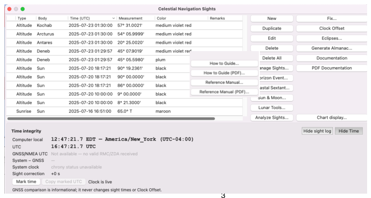

| Previous | Contents | Next |
Altitude sights and coastal navigation · Page 3 of 70
How to use Celestial Navigation Plugin for Sextant sights.
This How to guide, will show how to use this plugin through 3 use cases. The assumption is that you have overall familiarity of Navigation, Sextant usage, and some Celestial Navigation Theory and Logic. You won’t need knowledge on how to do a sight reduction, Cel Nav plugin does that for you. Understanding terminology will be useful. There is another document that discusses Theory and Logic
1. Create an Altitude Sight, Plan sights for a future ETA/Position (“Star finder”), Evaluate Sights taken.
2. Find Position using Coastal Navigation Sextant Sights
3. Find UTC time with a Lunar Sight, including planning for a Lunar. Use the Sextant collimation tool (same methodology as Lunars) to assess your Sextant’s accuracy at large angles.
Cel Nav Plugin is based on a Hub and Spoke Model (Illustration 1, next page). Click on the Open CPN Cel Nav Plugin icon, the first form you see is the “Celestial Navigation Sights” form. It’s the central hub and shows the sights you’ve input. Each field (eyes, Type, Body, Time, Measurement, Color) can be sorted. From there you screen navigate to the forms like “Input”, “edit”, “duplicate”. When you close a form, you are returned to the “Sights” form. To exit the plugin, close the “Sights” form.
 |
| Open illustration at full size |
| Previous | Contents | Next |